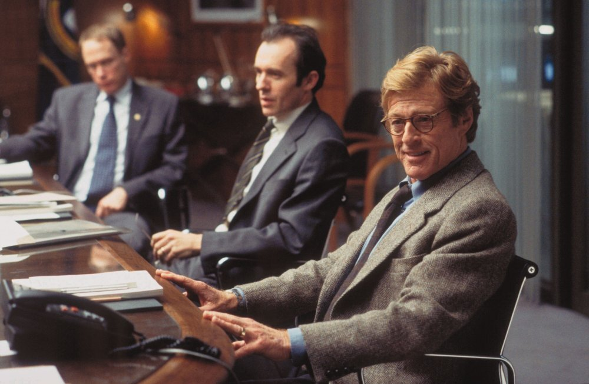

President Bartlett walks in. Someone's already condensed the world into the few things he needs to know. He doesn't read the whole newspaper. He gets the read.

Spy Game
The dossier on demand.
CIA leaders in a conference room. They ask. Five minutes later, someone walks in with a dossier. They don't go look things up — the material comes to them, formatted for the question they actually asked.